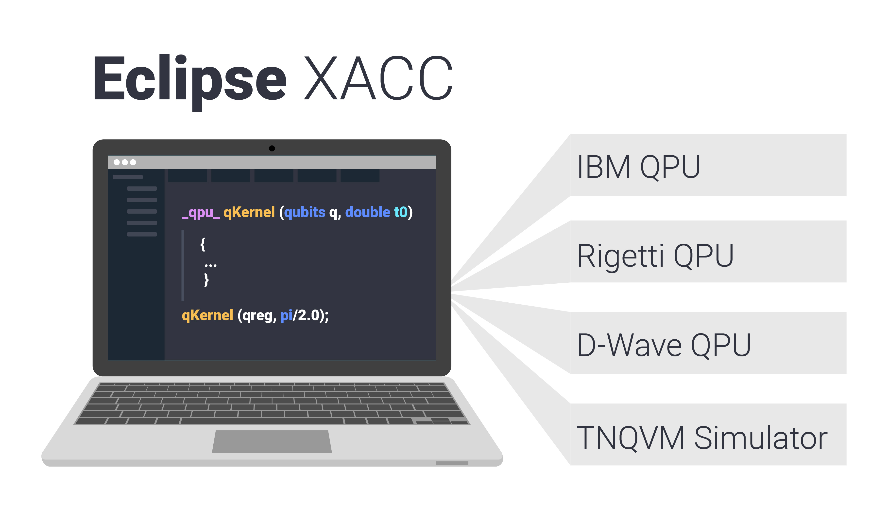

Welcome to XACC’s documentation!¶
Overview¶
XACC is an extensible compilation framework for hybrid quantum-classical computing architectures. It provides extensible language frontend and hardware backend compilation components glued together via a novel, polymorphic quantum intermediate representation. XACC currently supports quantum-classical programming and enables the execution of quantum kernels on IBM, Rigetti, IonQ, and D-Wave QPUs, as well as a number of quantum computer simulators.
The XACC programming model follows the traditional co-processor model, akin to OpenCL or CUDA for GPUs, but takes into account the subtleties and complexities inherent to the interplay between classical and quantum hardware. XACC provides a high-level API that enables classical applications to offload work (represented as quantum kernels) to an attached quantum accelerator in a manner that is independent to the quantum programming language and hardware. This enables one to write quantum code once, and perform benchmarking, verification and validation, and performance studies for a set of virtual (simulators) or physical hardware.
Modular Infrastructure¶
XACC relies on a project called CppMicroServices - a native C++ implementation of the OSGi specification that enables an extensible, modular plugin infrastructure for quantum compilers and accelerators. Installation of XACC provides the core infrastructure for describing Programs, Compilers, Accelerators, and IR. To enable support for various compilers and accelerators (like the OpenQasm or Quil compilers, or the IBM or Rigetti QPUs) you can install the appropriate plugin (see XACC Plugins).
Description of Architecture¶
For a comprehensive discussion of all components of the XACC programming model and architecture, please refer to this manuscript.
XACC Development Team¶
XACC is developed and maintained by:
Questions, Bug Reporting, and Issue Tracking¶
Questions, bug reporting and issue tracking are provided by GitHub. Please report all bugs by creating a new issue. You can ask questions by creating a new issue with the question tag.
Contents:
Publications¶
The following publications describe XACC or experiments leveraging the it.
[1] XACC: A System-Level Software Infrastructure for Heterogeneous Quantum-Classical Computing
[2] A language and hardware independent approach to quantum-classical computing
[3] Validating Quantum-Classical Programming Models with Tensor Network Simulations
[4] Hybrid Programming for Near-term Quantum Computing Systems
[5] Cloud Quantum Computing of an Atomic Nucleus
[6] Quantum-Classical Computations of Schwinger Model Dynamics using Quantum Computers